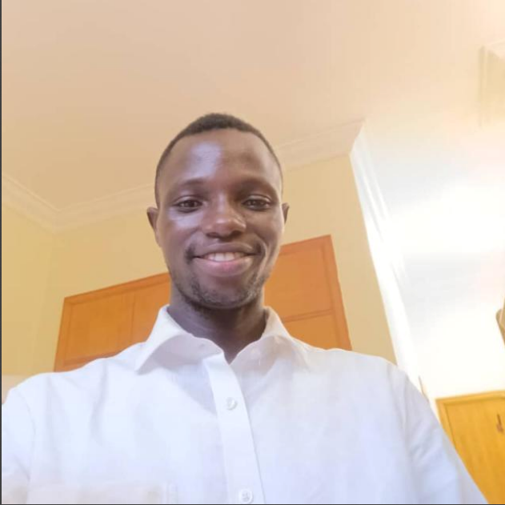

Barinuaka Blessed Bariagara | WDD 130
Hello, My name is Barinuaka, Blessed Bariagara and I am from Rivers state, Nigeria. I enjoy teaching and watching movies. I am currently studying Web Design and development using Visualstudio code tool. I am really excited to learn more about Web development and design. I look forword to creating a Website of my own and to learn more about the industry.